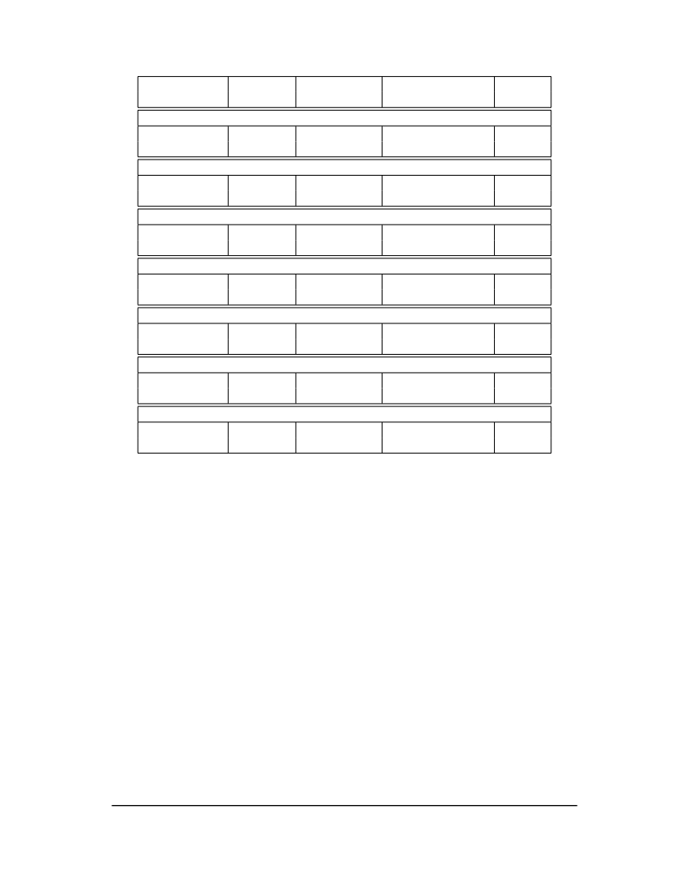

<table border="0" height="1453" width="1123">
<tr><td>
<div style="position:absolute; top:0; left:0;"></div>
<div style="position:absolute;top:74.119;left:132.145;"><nobr>
<span style="font-size:20.022;">26</span>
</nobr></div>
<div style="position:absolute;top:74.119;left:331.141;"><nobr>
<span style="font-size:20.022;font-style:italic;">Volume II: RISC-V Privileged Architectures V20190608-Priv-MSU-Ratified</span>
</nobr></div>
<div style="position:absolute;top:128.598;left:239.855;"><nobr>
<span style="font-size:20.022;">Current State</span>
</nobr></div>
<div style="position:absolute;top:128.598;left:383.328;"><nobr>
<span style="font-size:20.022;">Off</span>
</nobr></div>
<div style="position:absolute;top:128.598;left:493.597;"><nobr>
<span style="font-size:20.022;">Initial</span>
</nobr></div>
<div style="position:absolute;top:128.598;left:634.290;"><nobr>
<span style="font-size:20.022;">Clean</span>
</nobr></div>
<div style="position:absolute;top:128.598;left:817.362;"><nobr>
<span style="font-size:20.022;">Dirty</span>
</nobr></div>
<div style="position:absolute;top:153.465;left:236.074;"><nobr>
<span style="font-size:20.022;">Action</span>
</nobr></div>
<div style="position:absolute;top:183.452;left:412.759;"><nobr>
<span style="font-size:20.022;">At context save in privileged code</span>
</nobr></div>
<div style="position:absolute;top:209.050;left:236.074;"><nobr>
<span style="font-size:20.022;">Save state? No No No Yes</span>
</nobr></div>
<div style="position:absolute;top:233.917;left:236.074;"><nobr>
<span style="font-size:20.022;">Next state Off Initial Clean Clean</span>
</nobr></div>
<div style="position:absolute;top:263.905;left:401.301;"><nobr>
<span style="font-size:20.022;">At context restore in privileged code</span>
</nobr></div>
<div style="position:absolute;top:289.505;left:236.074;"><nobr>
<span style="font-size:20.022;">Restore state? No Yes, to initial Yes, from memory N/A</span>
</nobr></div>
<div style="position:absolute;top:314.372;left:236.074;"><nobr>
<span style="font-size:20.022;">Next state Off Initial Clean N/A</span>
</nobr></div>
<div style="position:absolute;top:344.360;left:416.986;"><nobr>
<span style="font-size:20.022;">Execute instruction to read state</span>
</nobr></div>
<div style="position:absolute;top:369.957;left:236.074;"><nobr>
<span style="font-size:20.022;">Action? Exception Execute Execute Execute</span>
</nobr></div>
<div style="position:absolute;top:394.826;left:236.074;"><nobr>
<span style="font-size:20.022;">Next state Off Initial Clean Dirty</span>
</nobr></div>
<div style="position:absolute;top:424.812;left:298.801;"><nobr>
<span style="font-size:20.022;">Execute instruction to modify state, including configuration</span>
</nobr></div>
<div style="position:absolute;top:450.412;left:236.074;"><nobr>
<span style="font-size:20.022;">Action? Exception Execute Execute Execute</span>
</nobr></div>
<div style="position:absolute;top:475.279;left:236.074;"><nobr>
<span style="font-size:20.022;">Next state Off Dirty Dirty Dirty</span>
</nobr></div>
<div style="position:absolute;top:505.267;left:388.678;"><nobr>
<span style="font-size:20.022;">Execute instruction to unconfigure unit</span>
</nobr></div>
<div style="position:absolute;top:530.864;left:236.074;"><nobr>
<span style="font-size:20.022;">Action? Exception Execute Execute Execute</span>
</nobr></div>
<div style="position:absolute;top:555.733;left:236.074;"><nobr>
<span style="font-size:20.022;">Next state Off Initial Initial Initial</span>
</nobr></div>
<div style="position:absolute;top:585.719;left:409.228;"><nobr>
<span style="font-size:20.022;">Execute instruction to disable unit</span>
</nobr></div>
<div style="position:absolute;top:611.319;left:236.074;"><nobr>
<span style="font-size:20.022;">Action? Execute Execute Execute Execute</span>
</nobr></div>
<div style="position:absolute;top:636.186;left:236.074;"><nobr>
<span style="font-size:20.022;">Next state Off Off Off Off</span>
</nobr></div>
<div style="position:absolute;top:666.174;left:411.508;"><nobr>
<span style="font-size:20.022;">Execute instruction to enable unit</span>
</nobr></div>
<div style="position:absolute;top:691.773;left:236.074;"><nobr>
<span style="font-size:20.022;">Action? Execute Execute Execute Execute</span>
</nobr></div>
<div style="position:absolute;top:716.640;left:236.074;"><nobr>
<span style="font-size:20.022;">Next state Initial Initial Initial Initial</span>
</nobr></div>
<div style="position:absolute;top:780.791;left:389.149;"><nobr>
<span style="font-size:20.022;">Table 3.4: FS and XS state transitions.</span>
</nobr></div>
<div style="position:absolute;top:836.363;left:212.233;"><nobr>
<span style="font-size:18.285;font-style:italic;">We separate out floating-point state from other extension state, as when a floating-point</span>
</nobr></div>
<div style="position:absolute;top:858.305;left:182.201;"><nobr>
<span style="font-size:18.285;font-style:italic;">unit is present the floating-point registers are part of the standard calling convention, and so</span>
</nobr></div>
<div style="position:absolute;top:880.248;left:182.201;"><nobr>
<span style="font-size:18.285;font-style:italic;">user-mode software cannot know when it is safe to disable the floating-point unit.</span>
</nobr></div>
<div style="position:absolute;top:914.234;left:132.145;"><nobr>
<span style="font-size:20.022;">The XS field provides a summary of all added extension state, but additional microarchitectural</span>
</nobr></div>
<div style="position:absolute;top:939.101;left:132.145;"><nobr>
<span style="font-size:20.022;">bits might be maintained in the extension to further reduce context save and restore overhead.</span>
</nobr></div>
<div style="position:absolute;top:982.254;left:132.145;"><nobr>
<span style="font-size:20.022;">The SD bit is read-only and is set when either the FS or XS bits encode a Dirty state (i.e.,</span>
</nobr></div>
<div style="position:absolute;top:1007.121;left:132.145;"><nobr>
<span style="font-size:20.022;">SD=((FS==11) OR (XS==11))). This allows privileged code to quickly determine when no addi-</span>
</nobr></div>
<div style="position:absolute;top:1031.988;left:132.145;"><nobr>
<span style="font-size:20.022;">tional context save is required beyond the integer register set and PC.</span>
</nobr></div>
<div style="position:absolute;top:1075.141;left:132.145;"><nobr>
<span style="font-size:20.022;">The floating-point unit state is always initialized, saved, and restored using standard instructions</span>
</nobr></div>
<div style="position:absolute;top:1100.008;left:132.145;"><nobr>
<span style="font-size:20.022;">(F, D, and/or Q), and privileged code must be aware of FLEN to determine the appropriate space</span>
</nobr></div>
<div style="position:absolute;top:1124.877;left:132.145;"><nobr>
<span style="font-size:20.022;">to reserve for each f register.</span>
</nobr></div>
<div style="position:absolute;top:1168.028;left:132.145;"><nobr>
<span style="font-size:20.022;">All privileged modes share a single copy of the FS and XS bits. In a system with more than one</span>
</nobr></div>
<div style="position:absolute;top:1192.897;left:132.145;"><nobr>
<span style="font-size:20.022;">privileged mode, supervisor mode would normally use the FS and XS bits directly to record the</span>
</nobr></div>
<div style="position:absolute;top:1217.764;left:132.145;"><nobr>
<span style="font-size:20.022;">status with respect to the supervisor-level saved context. Other more-privileged active modes must</span>
</nobr></div>
<div style="position:absolute;top:1242.631;left:132.145;"><nobr>
<span style="font-size:20.022;">be more conservative in saving and restoring the extension state in their corresponding version of</span>
</nobr></div>
<div style="position:absolute;top:1267.498;left:132.145;"><nobr>
<span style="font-size:20.022;">the context.</span>
</nobr></div>
</td></tr>
</table>
